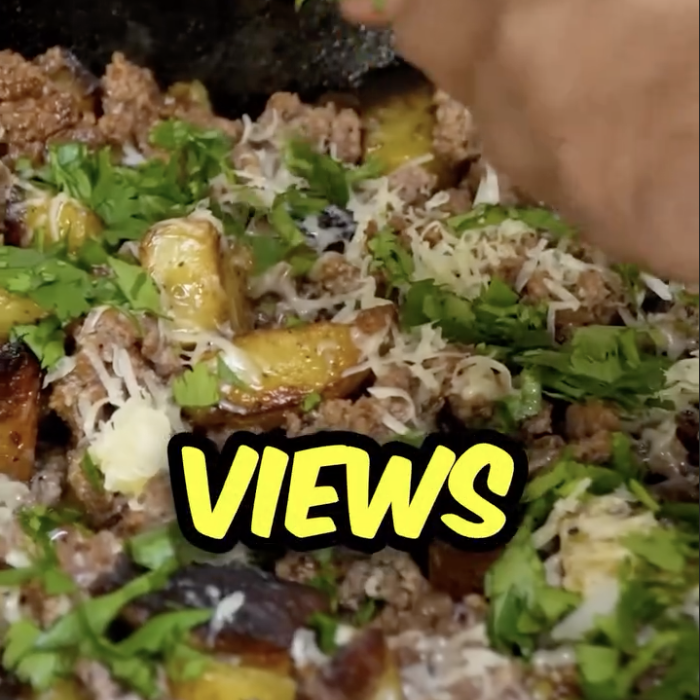

Carne y papas en sartén
Ingredientes:
*2 porciones
- 4 papas
- ½ cebolla
- Cilantro
- Agua
- Sal
- Queso Cheddar
- Cilantro picado
- Carne molida de res
- Sal
- Pimienta
- Paprika
- Ajo en Polvo
- Romero
Instrucciones:
- Corta tus papas a la mitad, y luego la mitad de esa mitad y consecutivamente hasta que queden
picados en cuadritos
- Añade agua a una olla, así como mucha sal.
- Dejar que las papas se remojen unos 15 mins, ya terminadas, colocalas en una servitoalla (toalla de
papel) para secarlas
- Pica media cebolla
- En otro plato, ralla el queso
- Calienta una sartén de hierro y hecha un poco de mantequilla
- Cocinar la carne (un 90%) en la sartén como carne molida y sazona con sal, pimienta, paprika, ajo en
polvo y romero
- Ya cocinada un 90%, hazla a un lado y en la misma sartén, cocina las papas, añadiendo más de las
sazones usadas previamente. Cuando estén casi listas las papas, añade la cebolla
- Una vez que la cebolla esté cocida, añade la carne de vuelta a la sartén
- Después de un rato, añade el queso y el cilantro y deja que el queso se vaya derritiendo